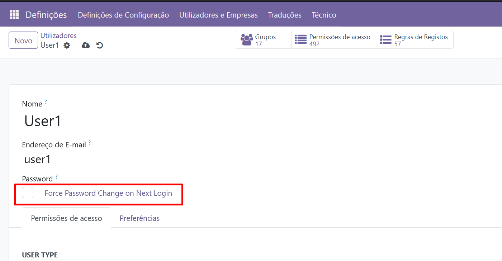
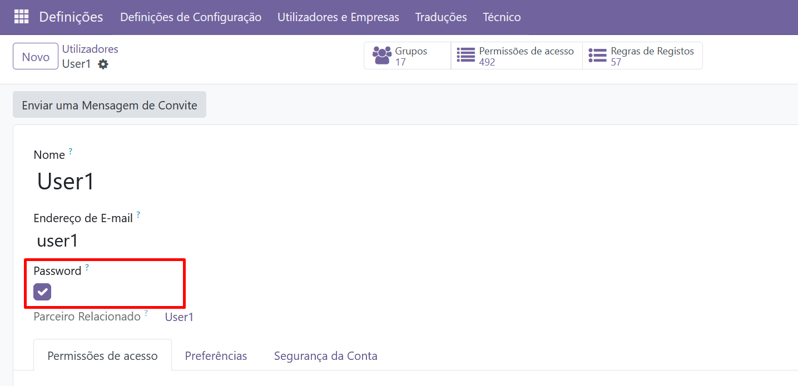
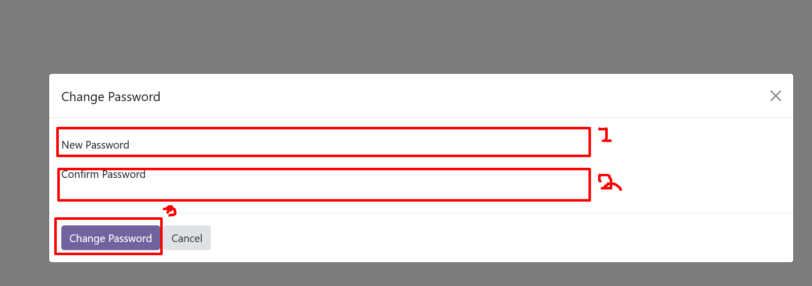

🔐 DL Login Force Password Change
🚀 Boost the security of your Odoo 17.0 instance!
This module forces users to change their password at their **first login** 🔑.
Perfect for corporate environments where strong password practices are a must. 🛡️
💲 Price: 16 USD
⚙️ How it works
- ➡️ Go to Settings > Users.
- 👤 Create a new user or edit an existing one.
- ✅ Enable the option Force password change on Next Login.
- 🔄 At next login, the user must set a new password before continuing.
✨ Key Features
- 🔒 Enforce password change at first login or on demand.
- 👥 Works for both new and existing users.
- ⚡ Lightweight & easy to install.
- 🖥️ Clear user flow with a simple password change screen.
📸 Screenshots
Examples of the module in action:



📦 Installation
- 📂 Place this module inside your Odoo addons folder.
- 🔄 Update the apps list.
- 📥 Install the module from the Apps menu.
- ⚙️ Configure users with the option enabled.
💬 Support
Need help or feature requests?
✅ Compatibility: Odoo 17.0 | 📜 License: AGPL-3
👨💻 Developed by DIGITALUB ANGOLA, LDA — digitalub.ao